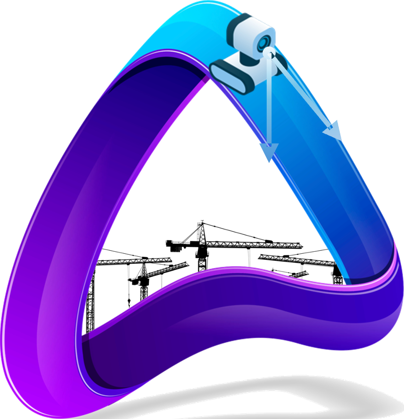

We investigate how to develop sensing systems and perception algorithms to sense dynamic, unstructured, and occluded construction environments.
Syracuse University · Civil & Environmental
Engineering

AI-driven Sensing Technology And Robotics (A-STAR) LabThe A-STAR Lab at Syracuse University develops intelligent robotic systems for civil and construction engineering.
Overview
The AI-driven Sensing Technology And Robotics (A-STAR) Lab at Syracuse University develops intelligent robotic systems for civil and construction engineering. We advance sensing, reasoning, and action capabilities that enable robots to perceive complex environments, make informed decisions, and physically interact with the world. Through these technologies, we seek to address persistent challenges in construction, including labor shortages, stagnant productivity, and safety risks, and help build a safer and more productive industry.
Construction sites are a compelling frontier for robotics and embodied AI. Their dynamic, unstructured, and physically demanding conditions create a strong need for intelligent automation while also making robotic deployment especially challenging. Our vision is to bridge this gap through integrated advances in AI, sensing and perception, robotic hardware, and human-robot collaboration, enabling robots to understand real-world environments, adapt to changing conditions, and work safely alongside people.
Construction is our proving ground, but not our boundary. Building on the technologies and knowledge developed in construction, we envision extending our research to broader civil infrastructure and future cities.
- Established
- 2024 Syracuse, NY
- Opportunities
- Students, Researchers & Collaborators See the join page
Research
Several research areas, one shared goal.
We develop advanced technologies to address critical challenges facing the civil and construction industries.
We investigate how AI can enable robots to understand their collaborators, tasks, and surrounding environments and make informed decisions during construction operations.
We investigate how robots can safely, reliably, and effectively collaborate with workers to improve task execution and completion.
We investigate how to build intuitive control methods that enable construction workers to supervise and operate robots for complex construction tasks.
We investigate how to build robotic systems that can perceive, navigate, and interact with built environments to support reliable site inspection.
Highlights